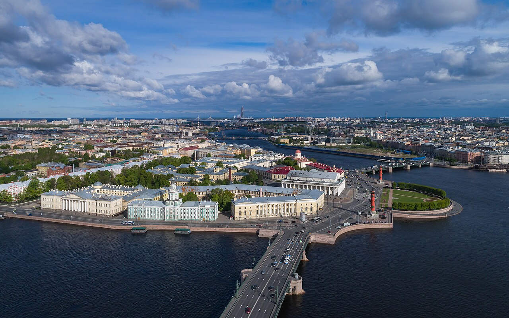

TRIPROTARVISOR
La Venezia del Nord

Benvenuti a San Pietroburgo
La città fu fondata nel 1703 da Pietro il Grande, sull'Isola delle Lepri, dove la Neva sfocia nel Golfo di Finlandia. L'idea era semplice: fare di questo porto una "finestra sull'Occidente", e per questo ogni palazzo volle sembrare un po' europeo e un po' russo.
Il centro storico è patrimonio UNESCO e mette insieme barocco e neoclassicismo. Bastano venti minuti a piedi dalla Prospettiva Nevskij per passare dall'Ammiragliato al Palazzo d'Inverno e da lì all'Ermitage, senza mai uscire dalla stessa strada.
È la capitale culturale della Russia, con oltre 250 musei, e per questo la chiamiamo anche la città dei musei. Poi ci sono i palazzi degli zar, le chiese ortodosse e una fioritura di canali: la città conta circa 400 ponti, alcuni dei quali si aprono d'estate per far passare le navi, come quello della Torre dell'Orologio.
Un dettaglio che ci ha colpito cercando il materiale: nel Settecento e nell'Ottocento a Pietroburgo lavorarono molti architetti italiani. Dietro l'isolamento dello zar c'era pure un pezzo di Venezia, e questo si vede in facciata.
Nella sezione Attrazioni trovate i tre luoghi che secondo noi non si possono non vedere, mentre in Eventi ci sono le feste e gli spettacoli più importanti dell'anno.